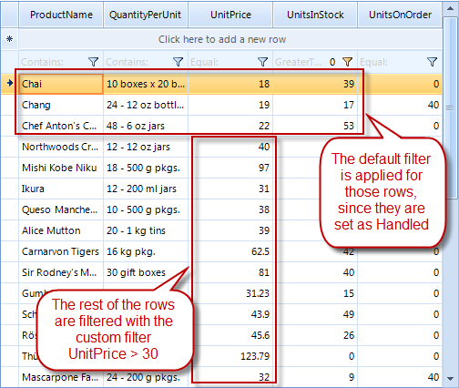

Custom Filtering
Custom filtering is a flexible mechanism for filtering RadGridView rows by using custom logic. It has a higher priority
than the applied FilterDescriptors (added either by code or using the filtering row).
Custom filtering is applied if user filtering is enabled using RadGridView.EnableFiltering or
GridViewTemplate.EnableFiltering properties. By default, filtering is disabled at all levels.
RadGridView provides two mechanisms for custom filtering:
Handling the CustomFiltering event
Replacing the RadGridView filtering mechanism by providing a custom FilterPredicate.
Using the CustomFiltering event
The CustomFiltering event is fired when the custom filtering is enabled.
The arguments of the CustomFiltering event provide the following properties:
Template – the template that holds the rows where filtering is applied
Row – the row to be filtered
Visible – defines if the row is visible or hidden from the filtering results
Handled – defines whether the row is processed by the custom algorithm or by the applied filter descriptors
The following example demonstrates how to hide all RadGridView rows that contain a value less than 30 for the UnitPrice column.
The added FilterDescriptor for the UnitPrice column in this example is not considered when defining which rows to hide.
All RadGridView rows are processed from the custom logic in the CustomFiltering event handler.
[C#]
this.radGridView1.EnableCustomFiltering = true;
this.radGridView1.CustomFiltering += new GridViewCustomFilteringEventHandler(radGridView1_CustomFiltering);
FilterDescriptor descriptor = new FilterDescriptor("UnitsPrice", FilterOperator.IsGreaterThan, 0);
this.radGridView1.FilterDescriptors.Add(descriptor);
[VB.NET]
Me.RadGridView1.EnableCustomFiltering = True
Dim descriptor As New FilterDescriptor("UnitsPrice", FilterOperator.IsGreaterThan, 0)
Me.RadGridView1.FilterDescriptors.Add(descriptor)
[C#]
private void radGridView1_CustomFiltering(object sender, GridViewCustomFilteringEventArgs e)
{
e.Visible = (decimal)e.Row.Cells["UnitPrice"].Value > 30;
}
[VB.NET]
Private Sub RadGridView1_CustomFiltering(ByVal sender As Object, ByVal e As Telerik.WinControls.UI.GridViewCustomFilteringEventArgs) Handles RadGridView1.CustomFiltering
e.Visible = CDec(e.Row.Cells("UnitPrice").Value) > 30
End Sub

The following example demonstrates how you can use the Handled property of the CustomFiltering
event arguments. We will hide all rows that have their UnitPrice less than "30" and ProductName not starting with “Ch”. In addition, there is
a FilterDescriptor that will hide rows containing values less than "1" in the UnitsInStock column
[C#]
this.radGridView1.EnableCustomFiltering = true;
this.radGridView1.CustomFiltering += new GridViewCustomFilteringEventHandler(radGridView1_CustomFiltering);
FilterDescriptor descriptor = new FilterDescriptor("UnitsInStock", FilterOperator.IsGreaterThan, 0);
descriptor.IsFilterEditor = true;
this.radGridView1.FilterDescriptors.Add(descriptor);
[VB.NET]
Me.RadGridView1.EnableCustomFiltering = True
Dim descriptor As New FilterDescriptor("UnitsInStock", FilterOperator.IsGreaterThan, 0)
descriptor.IsFilterEditor = True
Me.RadGridView1.FilterDescriptors.Add(descriptor)
[C#]
private void radGridView1_CustomFiltering(object sender, GridViewCustomFilteringEventArgs e)
{
string productName = e.Row.Cells["ProductName"].Value.ToString();
e.Handled = !productName.StartsWith("Ch");
e.Visible = (decimal)e.Row.Cells["UnitPrice"].Value > 30;
}
[VB.NET]
Private Sub RadGridView1_CustomFiltering(ByVal sender As Object, ByVal e As Telerik.WinControls.UI.GridViewCustomFilteringEventArgs) Handles RadGridView1.CustomFiltering
Dim productName As String = e.Row.Cells("ProductName").Value.ToString()
e.Handled = Not productName.StartsWith("Ch")
e.Visible = CDec(e.Row.Cells("UnitPrice").Value) > 30
End Sub

Implementing filtering mechanism using FilterPredicate
You can replace the filtering mechanism in RadGridView with a custom one, by setting the FilterPredicate
of the GridViewTemplate.
The following example demonstrates how to use a custom filtering mechanism in RadGridView to hide all RadGridView rows which that
have UnitPrice less than 30:
[C#]
this.radGridView1.MasterTemplate.FilterPredicate = new Predicate<GridViewRowInfo>(PerformFiltering);
[VB.NET]
Me.RadGridView1.MasterTemplate.FilterPredicate = New Predicate(Of GridViewRowInfo)(AddressOf PerformFiltering)
[C#]
private bool PerformFiltering(GridViewRowInfo row)
{
bool valid = (decimal)row.Cells["UnitPrice"].Value > 30;
return valid;
}
[VB.NET]
Private Function PerformFiltering(ByVal row As GridViewRowInfo) As Boolean
Dim valid As Boolean = CDec(row.Cells("UnitPrice").Value) > 30
Return valid
End Function